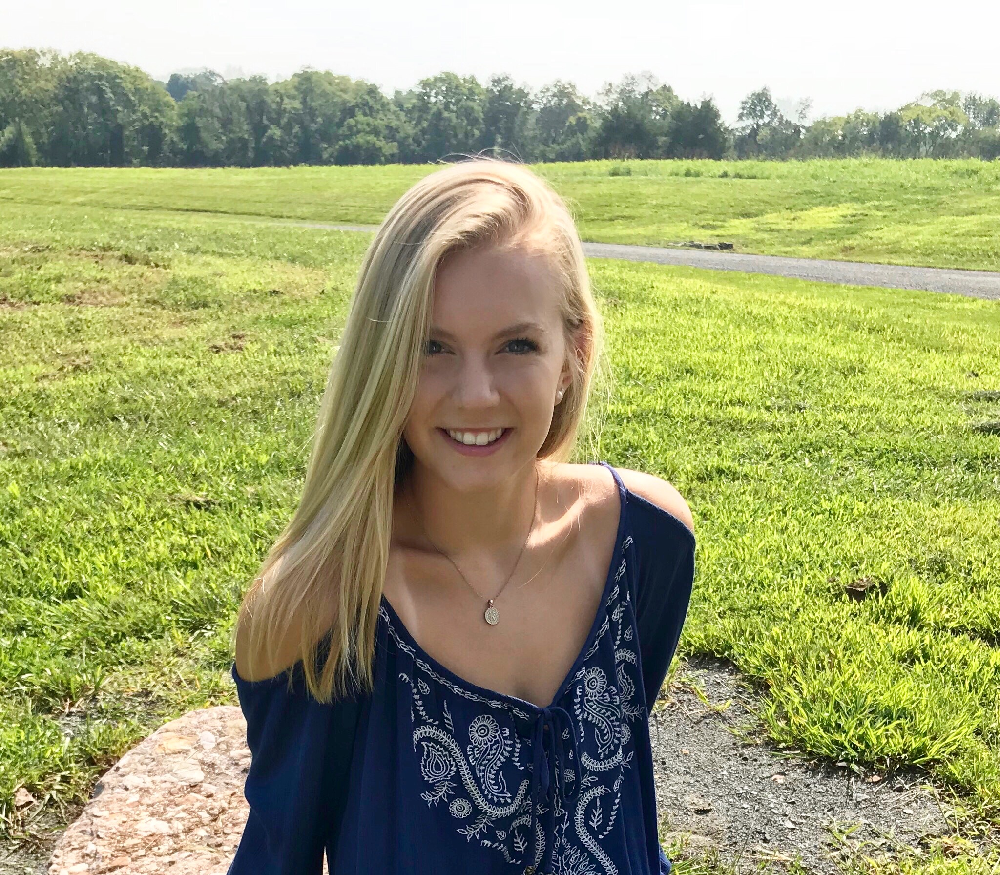

Resume
Katie Johnson
Contact Info
- Phone: 571-577-7220
- Email: john44km@dukes.jmu.edu
Profile
Throughout high school, I learned how to manage my time by working various jobs, playing a sport, acting as head designer for school newspaper, and continuing my education. While heading the design team on my school newspaper, we were invited to attend Columbia University for their annual Columbia Scholastic Press Association event and crown awards. Since graduating high school, I am now curently furthering my education at James Madison Univ. as a junior studying media arts and design. During high school I fell in love working with adobe products and design elements, so I knew this major and career path was perfect for me. At JMU, I am member of a sorority, Tri Delta. Our philanthropy, St. Jude, stands close to my heart as we raise money and support the children's hospital. Each year we try to raise between $50,000-$100,000 through events we host throughout the year. I love to be active and always have a positive attitude and hope to further my work experiences by broadening my horizon, and taking on new challenges.
Experience
Fitness Attendant, Ida Lee; Town of Leesburg: Summer 2016 - Fall 2017
As a fitness attendant, I worked in the gym and made sure everyone was using the equipment correctly, while engaging with customers and keeping the fitness rooms clean and stocked with necessary items.
Soccer Instructor, Ida Lee; Town of Leesburg: Fall 2016 - Current
When I first took the job I was an assistant, after roughly 2 years I was appointed Head Soccer Instructor. I work with kids ranging from 3-14 y/o in groups of 8-12 kids. Each day before work I would make a set plan for each group of kids. During lessons and summer academies I teach them soccer skills and sportsmanship. I also engage with their parents after class to let them know how their kids are doing and what they can do to help them outside of class.
Employee for Lucky Brand Jeans Outlet: Winter 2019 - Spring 2020
At lucky brand jeans, I help customers find the right pair of jeans and make them feel comfortable in there skin. I always handle the cash as a cashier and help stock the store as well. This job has taught me more social skills with adults and how to manage different jobs at the same time.
Education
Tuscarora High School - HS advanced Diploma, 2018, GPA: 3.76
Currently attending James Madison University - persuing a degree in media arts and design with a concentration in interactive design as well as a minor in business, deans list: spring 2020/fall 2020; expected graduation date, 2022, current GPA: 3.105
Skills
Through the years while holding a job and furthering my education, I have learned time management, and communication skills. I also always have a positive attitude and when difficult situations arise I have learned to problem solve and handle them in a timely matter. I have also had practice working with clients as well as group projects.